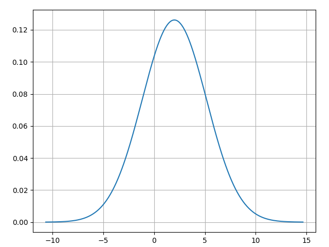
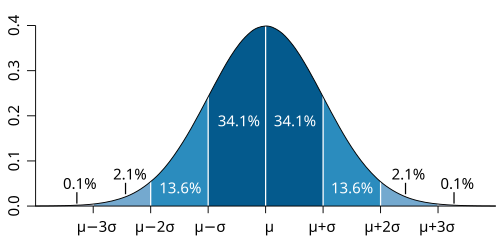
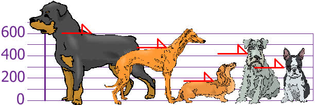
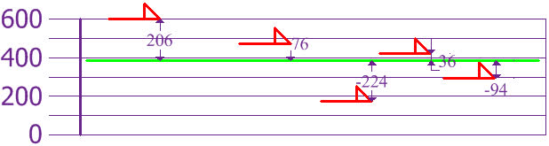
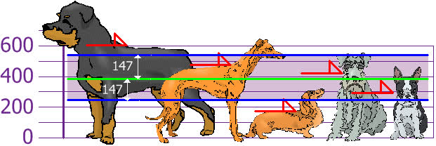

6.1 Probability Theory
Created Date: 2025-05-18
6.1.1 Normal Distribution
In probability theory and statistics, a normal distribution or Gaussian distribution is a type of continuous probability distribution for a real-valued random variable. The general form of its probability density function is:
The parameter \(\mu\) is the mean or expectation of the distribution (and also its median and mode), while the parameter \({\sigma}^2\) is the variance. The standard deviation of the distribution is \(\sigma\) (sigma). A random variable with a Gaussian distribution is said to be normally distributed, and is called a normal deviate.
The file normal_distribute.py sets \(\mu = 2\) and \(\sigma^2 = 10\), and uses NumPy to plot the normal distribution:

Image below illustrates a normal distribution curve, often referred to as a bell curve, showing how data is distributed around the mean (\(\mu\)) in a general normal distribution. The curve is symmetric with its peak at the mean \(\mu\), representing the highest probability density. The horizontal axis is labeled in units of standard deviation \(\sigma\), and the percentages indicate the proportion of data falling within each range:

The simplest case of a normal distribution is known as the standard normal distribution or unit normal distribution. This is a special case when \(\mu = 0\) and \({\sigma}^2 = 1\), and it is described by this probability density function (or density):
The normal distribution is often referred to as \(N(\mu, {\sigma}^2)\) or \(\mathcal{N}(\mu, \sigma^2)\). Thus when a random variable \(X\) is normally distributed with mean \(\mu\) and stanard deviation \(\sigma\), one may write:
6.1.1.1 Mean and Median
The mean is the sum of all values divided by the number of values. For numbers \(x_1, x_2, \cdots , x_n\):
The median is the middle number when the data is sorted.
If the number of data points is odd, the median is the middle value.
If even, it is the average of the two middle values.
6.1.1.2 Standard Deviation and Variance
Variance measures how spread out a set of numbers is. It's the average of the squared differences from the mean. You and your friends have just measured the heights of your dogs (in millimeters):

The heights (at the shoulders) are: 600 mm, 470 mm, 170 mm, 430 mm and 300 mm. Find out the Mean, the Variance, and the Standard Deviation.
Our first step is to find the Mean:
so the mean (average) height is 394 mm. Now we calculate each dog's difference from the Mean, let's plot this on the chart:

To calculate the Variance, take each difference, square it, and then average the result:
So the Variance is 21,704. And the Standard Deviation is just the square root of Variance, so:
And the good thing about the Standard Deviation is that it is useful. Now we can show which heights are within one Standard Deviation (147 mm) of the Mean:

So, using the Standard Deviation we have a "standard" way of knowing what is normal, and what is extra large or extra small.
Rottweilers are tall dogs. And Dachshunds are a bit short, right?
Our example has been for a Population (the 5 dogs are the only dogs we are interested in). But if the data is a Sample (a selection taken from a bigger Population), then the calculation changes!
The Population: divide by \(N\) when calculating Variance (like we did)
A Sample: divide by \(N - 1\) when calculating Variance
The Population Standard Deviation:
The Sample Standard Deviation:
If our 5 dogs are just a sample of a bigger population of dogs, we divide by 4 instead of 5 like this:
\(Variance = \frac{108520}{4} = 27130\)
\(Deviation = \sqrt {27130} = 165\)